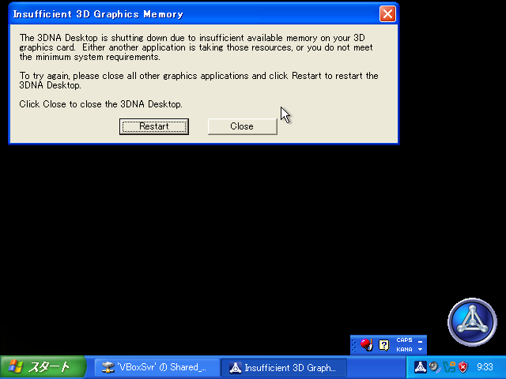

3DNA Desktop 動かせた・ザズベイを飲んだ・など雑記
最近あったことを色々書きます。
目次
3DNA Desktop で再び遊べた
昔、3DNA Desktop という PC ゲームがあった。2003～2004年頃に日本語版が登場し、2006年頃まではなんだかんだ開発されてたと思うけど、それ以降開発が停止してしまった。「デスクトップ」と名のつくとおり、デスクトップを仮想化したツールであり、特に「ゲーム」として目標設定があるモノではないが、雰囲気が好きでよく遊んでいた。2005年頃には「3DNA で遊んでみよう」という特集ページを作っていたくらいだ。
Windows 7 の頃には既にインストールしても起動しなくなっていたと記憶しており、Windows 10・11 でも起動できず。そこで2021年にも、当時の VirtualBox と VMware Workstation 15 Player で Windows XP 仮想マシンを用意して再び遊べないかと試行錯誤していたのだが、当時はグラフィックメモリの設定がうまく行かず、3DNA の起動まではできたが画面が1コマ分だけ表示されたのちフリーズする、というところで手詰まりとなっていた。
- 3DNA で遊んでみよう
- 2021-04-05 もう一度 3DNA で遊びたい
今回、2026年時点で最新の VirtualBox で再挑戦するも、コチラではやはり仮想マシンに割り当てる GPU 設定が上手く行かずに、3DNA 起動時に以下のエラーが出てしまった。

Insufficient 3D Graphics Memory
The 3DNA Desktop is shutting down due to insufficient available memory on your 3D graphics card. Either another application is taking those resources, or you do not meet the minimum system requirements.
To try again, please close all other graphics applications and click Restart to restart the 3DNA Desktop.
Click Close to close the 3DNA Desktop.
そこで次は VMware Workstation Pro 26H1 に切り替えて、Windows XP SP3 環境を用意、そこに 3DNA をインストールしたうえで 3D アクセラレーションを有効化してみた。コレでようやく 3DNA を起動でき、ぼちぼちの快適さで遊ぶことができた。
「3D アクセラレーションの有効化」の際、ホストマシンの RTX5070Ti GPU と Vulkan エンジンの相性が良くなかったようで、ただ設定を有効化するだけでは Win XP 仮想マシンの起動が上手く行かなかった (Third party host clock rate has already been set というエラーが出てしまった)。そこで、.vmx ファイルをテキストエディタで開いて以下あたりを追記した。この辺は Gemini などに質問しながら効果のあったモノだけ残した感じ。一番大事なのは上2つかな？それ以外は有無による違いはよく分からず。
mks.enable3d = "TRUE"
mks.enableVulkanPresentation = "FALSE"
mks.enableHDPI = "FALSE"
mks.gl.allowBlacklistedDrivers = "TRUE"
svga.autodetect = "FALSE"
svga.guestBackedPrimaryAware = "TRUE"
svga.vramSize = "134217728"
コレでまぁとりあえず動いた。3DNA のインストーラは以下の Archive.org よりダウンロードしたところ、色々なワールドが入っていて楽しめた。3DNA の「Systray」と呼ばれるオーバーレイアイコンを表示してると描画性能がガタ落ちするので非表示にすると良い。
実際に遊んでみた様子を OBS で収録したのが以下の動画。環境設定してまで遊ぶほどじゃないな、という人はコチラの動画をチラ見いただければ十分かと。ｗ
ザズベイを飲んだ
2022年1月からうつ病・適応障害でずっと通院していて、2025年3月からはさらに体調を崩して休職中だが、未だかつて「激的に効いた薬」というモノには出会えてこなかった。デパスがあれば夜は眠れるけど、ジェイゾロフト、イフェクサー、レキサルティ、エビリファイなどは「真剣に考えれば効いたかもしれないけど、飲まなきゃ飲まないで大差なくやっていける」ぐらいの代物だった。
そこで最近、ザズベイ (ズラノロン) という薬を試すことになった。日本では今年2026年3月に発売されたばかりの新薬で、「2週間だけ飲んで一気に治す」という方向性の薬だ。2週間飲んだら6週間ほど経過観察して、調子が良ければ薬を再開することはない、という感じらしく、コレまでの薬のように血中濃度を一定に保って効果を狙うようなタイプとは全く異なる。GABA 受容体に働きかけて何らかがブチ上がるらしい。「それかもしくは麻酔しての電気ショック療法はどうですか？」と言われたので、電気怖すぎワロタとなりザズベイを試してみることにした。
薬を14日分処方されて、1錠目を飲んだ翌日から激的な変化があった。飲んだ直後の数時間は「食べすぎた時」「歯磨きしてえずく」ような、喉から上だけで起こる吐き気が少しだけあったが、それくらいで、寝て起きたら意欲マシマシ。「ちょっと世界を革命でもしちゃいますかぁ～！」ってな気分になって、散歩行ったり服買ったり色々できた。
この1年ほど、低気圧や天候不順により自律神経が乱れて調子を崩すことが顕著になってきたのだが、コレは残ってしまった。台風が近付いてくると身体が起こせなくて寝たきり状態になってしまう。でもメンタル的な落ち込みは少なく、「何でこんな調子悪いんだ～？」としばらく原因に気付かないくらいだった。「今日も何も出来なかった…」と後悔を引きずる時間も少なく、休むなら休むか、という気持ちの切り替えもスムーズに出来るようになった気がする。
デパスは併用して処方されていたので寝る前に飲んでいたが、寝る時になっても思考が目まぐるしく切り替わり、布団の中でずっと何かを考えているような興奮状態は続いていた。特に何かを悩んだり、具体的に考えていることを覚えているワケではないのだが、例えるなら「明日の大事な面接に向けて色んな会話シミュレーションをしている」ような、アレもコレもと次から次に湧いてくる何かに考えを巡らせてしまっていた。入眠の難易度は上がったが、さして困りもしなかったかな？ちょうど夏の暑くなってきた時期と重なっていたので、暑くて寝苦しいのと区別があまりついてなかった。
前述するちょっとした吐き気と、寝る時も高ぶっている覚醒状態、それから飲み始めて4～8日目あたりでよく感じていたのは、「何か夢を見たけど、それが現実と区別が付かないような感覚がある」こと。家族や親戚と会った夢を見たらしく、「父親とこんな話をしたよな～」という記憶が残ってたけど、よくよく考えたら両親とは1ヶ月ほど対面しておらず、そんな会話もしてなかった (夢の中の出来事を混同していた)、ということがあった。薬の取説に書かれていた副作用に「幻覚」とあったのも分かる。
自分の場合は幸い副作用といえばそれくらいで、その他は特に困るようなこともなく、ただただ意欲が湧き気持ちが前向きに変わっただけだった。現在は2週間の投薬期間が終わり、最低6週間の経過観察期間に入ったところ。このあとの6週間で元通りの無気力病人に戻ってしまう恐れもゼロではないが、今のところ変化なし。上手く行けばこのまま「もう薬は要らなさそうですね」となるんじゃないか？と期待できそうなくらい、本当に激的に変わった。
ただまぁ、この薬で変わるのは GABA 受容体までの話であって、当たり前だが「毎日通勤勤務ができるか」といった体力面、「興味のない仕事でも継続できるか」といった現実との折り合いまでは解決できないワケで、自分がこのあと数ヶ月以内に復職ができるかどうか、というところは特に体力面に不安が残っている。ココはフツーに筋トレを頑張るしかない。
Instagram のコメ欄の治安の悪さよ
Threads が頭のおかしい人だらけなのはすぐ分かって離れたけど、最近は Instagram のコメント欄も中々ヤベェ奴多いなと思っている。
「(IT 系の話で) こんな失敗をしちゃった時は、こういうツール・手順で補正ができます！」みたいなお役立ち動画を見かけて、「はえー役に立ったンゴ」と思い感謝コメでも入れようかと思ってコメ欄を開いたら「最初にそんな失敗をするのが悪くないですか？最初から失敗をしなければいい話。」みたいな的外れなコメントがあって気分を害したり。
「外国人に海外の文化を聞いてみよう！」という動画でアジア系アメリカ人の人が、自分が受けた差別的な体験を紹介していて、それに対して複数の方々が「白人側には・黒人側にはこういうステレオタイプが (昔は特に) ありがちだった」といった見解を紹介されていて、「なるほど～アメリカの中でもお互いにそんな考えのズレが起こりがちだったのね～」と思いながら何気なくコメント欄を開いたら「あなたのその考えは違うと思います」とかいうコメントが付いていて、えっ！自分の体験から私はこう思いましたって話に「あなたがそう思うのは間違いです」ってコメントするあなたの了見はどういうことなの！？と思って気分を害したり。
「まず自分の思想が正しくて、それに即していないあなたは正しなさい」といった物言いのコメントが多くて、エグ～いとなっていた。
かくいう私にも、特に仕事に対してはこういう思考の傾向が強かった自覚はある。「みんなが俺のように考えればスムーズに行くのに……」みたいな。ただ、同時に「みんなが変われ、とはついつい思ってしまうけど、現実それは出来っこないよね」「私は自分の意見がベストかのように思ってるけど、本当にそうだと言い切れる判断材料も実は持ち合わせないよね」といった認識も当然持っていたので、人様に向けてそれをドストレートにぶつけることは少なかったと思うし、ぶつけてる時は相当その相手のことが嫌いで、「もうお前なんか変わらなくていいからとにかく嫌な気持ちになれ」という腹いせの攻撃だと自覚しながらやっていたと思う。自分のクソ具合をわきまえてはいた、というか。
でも、Instgaram と Threads の民は、「俺の言うことも相当トガってるとは思うけどよー、」という前提がマジでなさそうな、心から本気で自分が正しいと信じ切っているようなヤバさがある。よりにもよってそれが「発生してしまったお困りごとの解消に役立てれば幸い」とか「お互いの違いを理解し合おう」とかいった趣旨の動画のコメント欄で展開されているので、そこからの会話がもう一切成り立たない。完全に脳がイカれた病人同士が「私こそイエス・キリストだ」と言い合ってるような惨状だった。
自分はココ1年ほど病気で休んでいることもあるし、あとは子供が生まれてくれたことによる心境の変化が大きくて、「自分本位に効率面だけ考えたら、この場全体がこのように動けばいいのに」と思ってしまっても、「とはいえ色んな人がいるワケでさ、そんな効率的に物事は動かないのが世界のシステムだしな」というある種の諦めというか、本当に実際にこの場を上手く動かすために必要な行動は「俺の独裁的な思考や強制指示」ではないよな、というブレーキが働くようになったと思っているんだが、病気の経験があろうとなかろうと、子供がいようといまいと、変わらずヤベェ奴は全然いるんだ、っていうのが結構衝撃だったりする。
ココまで書いていて、「そんなのお前がいちいちコメ欄を見なきゃいいだけの話」とかいうまた的外れなはてブコメが付きそうだな～と予想している。実際今の自分に出来る手っ取り早い対策はそうであり、そうしようと努めてはいるのだが、コレも自分の今言いたいことに対してはズレた指摘なんだよな～。
臭いモノにフタをしたところで、攻撃的なウイルスはその中で大暴れして徐々に世界を侵食しているのだが、「賢い人達が黙って目を逸らし居場所を変えている」だけでソレは収まる日が来るのか？ ということも、気になっている。LUUP が無神経に道路を走ってるところに遭遇して、「車間距離を取ればいい」と言われている時のような。なんでマジメに生きてる人達の方が我慢して割を食わなきゃいけないの？ という気分も多少ある。
あと、最近はもう少し積極的にクリエイターに向けて応援コメントを残そうかな、と思い始めたところがある。
何人かの配信者・クリエイターさんに話を聞けたのだが、「視聴者の自分語り多めなコメントってもらって嬉しいんですか？」と聞いたら、「何にせよ反応ゼロよりは嬉しい・フィードバックがあることがモチベーションになっている」と回答をもらったのがきっかけだ。気に入らなかったモノに対して気に入らないと明言する必要はないが、「笑った」「タメになった」「興味深かった」といったポジティブなフィードバックはクリエイターにとっては活動を続ける力にちゃんとなっているのだと。じゃあ自分はそういう気持ちを抱いたら伝えておこうかな、別に必ず読まれなくてもいいし、埋もれたコメントになってもいいけど、「良い言葉」や「感謝」をもっと出していくことに悪いことはないだろうな、と思うようになったワケである。
インスタに投稿されてて自分が見てるコンテンツ自体は興味深く、そのコンテンツクリエイターにも敬意を表したい。そのため一言でもコメントを残そうかなと思いコメ欄を開くワケだが、そこで視界に入ってしまう他の無神経なコメントに心を乱されてしまっている状態なのだ。
自分の精神病による感受性の偏りもあるだろうし、プロスペクト理論、ネガティビティ・バイアスといった認知バイアスによる自然な反応だと説明することもできるだろう。あるいは、Twitter や YouTube のフィルター・アルゴリズムの方が自分にとっては居心地が良く、インスタ・スレッズのソレは自分と相性が悪い、というプラットフォームごとのシステム設計の違いかもしれない。
まぁ思い返せば20年ほど前、「ポケ熱同盟掲示板」の居心地は自分には良かったが、「みゅうはあと掲示板」は荒らしと自治厨の喧嘩が多くて自分は近寄らなかった。でもみゅうはあと掲示板の方がそれでも人口は多かったし、ポケ熱同盟掲示板では逆に俺が好き勝手やりすぎて他の人は俺のことを迷惑がって離れていたかもしれない。昔から構造は変わらないし、人のこと言える立場じゃないだろ、ってツッコミもまぁ分かる。「マジメな人が割を食うのかよ」とさっき書いたが、何だかんだゾーニングされてればその領域を大きく侵害してくることも起こらずに済んだりするモンなんだろうか。でも、全体的に「なんかやな世界だなー」という気持ちだけは残り続けている。
絶対に俺が世界を変えてやるという強い意志もないけど、大人しく我慢もできない、中途半端な人間だ。
最近の推し活
去年2025年の6月下旬、3D の姿を映したままトイレに離席してゲッダン状態になるマリン船長の動画を TikTok か何かで見かけて以来、ヴィートゥーバー界隈にドハマリした。あれからちょうど1年ほど経ったところだ。
- 問題のシーン切り抜き : 何度見ても笑える宝鐘マリンのトイレシーン【ホロライブ/切り抜き/VTuber/ 宝鐘マリン 】 - YouTube
- 元配信 : 2023-11-25 【マリころオフコラボ3D】超おどるメイドインワリオ【ホロライブ/宝鐘マリン】 - YouTube
きっかけがホロライブのマリン船長だったので、ホロライブのタレントを中心に見るようになり、基本的にはホロライブ箱推し。最推しというのは中々決められないが、箱内で「重点的に履修」していったタレントでいうと、儒烏風亭らでん → さくらみこ → 星街すいせい → 綺々羅々ヴィヴィ → 猫又おかゆ → 大空スバル → 鷹嶺ルイ → 尾丸ポルカ、みたいな流れだろうか。日本勢との交流も比較的盛んなフワモコ、ハコス・ベールズ、森カリオペ、ネリッサあたりもちょくちょく見ているし、ホロアナも見てる。強いていえば、ぺこら・フレア・ルーナ・ラミィ・ぼたん・こより、などはまだ履修が足りてなくて、嫌いとかじゃないけど「よく分かっていない」感じかな。mekPark という新しい括りの「Achrora」と「Unit-B」はコレからどうなっていくかしら～。
ホロライブを知ると同時に、たまたまデビュー直前に発見して初回配信からリアタイしてたのが悠針れいさん。彼女とのコラボで存在を知る活動者も多く、敷嶋てとらさん、2026年5月にデビューしたばかりの花前ハルさん、おめがシスターズのお二人などを最近は見ている。特におめシスは最近ドハマリしている。リオちゃん推し。敷嶋てとらさんもそうだが、長尺配信ではなく10分程度の動画投稿がメインなのも、後から知った人間がとっつきやすいポイントなのかもしれない。
あとは Kson ネキとか鮫升コモリ先生とか、「実体」もお持ちな方々は「実写 YouTuber」に近い感覚から個人的にはとっつきやすかったかなと思っている。元々ゆっくり解説か「板橋ハウス」をよく見てた人間なので、実写の方が親近感あるというか。アイマス・デレステ・プロセカ・バンドリ・ウマ娘など、いわゆる「2次元」は今もなお全く通っていない (これらも名称を知っているだけ) ので、自分的には絵柄への優先度が低いというか…。実写映像が面白いか、映像を消してもラジオ感覚で楽しめるか、のどちらかだと、自分にとっては入りやすいのかなと感じている。
ホロライブ以外の箱に中々目が移せてない。にじさんじは人数が多過ぎて把握不能、「さんばか」だけ見てる。あおぎり高校は大代真白が面白かったけど知ったときには既に卒業されていた。ゲームや e スポーツへの興味がないので、ぶいすぽとかも全然知らないや…。ホロライブの人数の時点で、休職中のヒキニートでも可処分時間が食い潰されてしまっていて全部は追いきれないので、コレ以上推しを増やす方向には行かないかも…。
配信も、当初はリアタイもちょくちょくしていたけど、最近はあえてリアタイせず、アーカイブを倍速再生する見方になっている。寝落ち用に聞き流してた時もあったけど、ゲーム配信なんかでハイテンションにワーワー騒がれてしまうと眠れないし (笑)、雑談配信は寝落ちせずちゃんと聞きたいし、ということで寝落ちする際に聞くのは止めた。寝落ちの際は耳に入ってくる声のトーンが変わらない「ゆっくり解説」系がやっぱり向いている。
アーカイブでの倍速再生についても、長尺の生配信を全て追っかけようとするのは止めて、特に気になった放送だけピックアップして、あとは見ない、という方向に頑張って倒している。面白いシーンがあれば Twitter か YouTube で切り抜きが必ず流れてくるので、それらに頼ることにしている。配信者のチャンネルを直接見ないと利益に還元されないんじゃないかとか考えていたが、そもそも広告ブロック入れてるし関係ないか？あと俺の時間がいくらあっても足りん！となって諦めた。
休職中ヒキニートのためお金もないことだし、そもそもモノが欲しくならないタイプなので、グッズ購入などもほぼしていない。今までにアクキーを2・3個、T シャツを2枚くらい、あとは LINE スタンプを買った程度だろうか。メンバーシップだのといった課金も一切していないので、本当にお金を落とさないファンだと思う。まぁ、音楽 CD やバンド T とかも全然買わずに来たような、タレント商品とは無縁で生きてきた人間なので、あしからず…。
こんなんですが、「無料配信の範囲でこんなに楽しませてもらっていて良いんですか！」と思うくらいにはこの1年間の自分を支えてくれていたのが VTuber 界隈のコンテンツなので、自分に出来る範囲の応援はしていきたいと思っている。もし今の会社への復職に失敗したら、転職先候補として VTuber の配信や技術、製作物に携わる仕事を考えるくらいには、業界そのものにも興味がある。業界の内情を知らないから言えてる夢・絵空事かもしれないが、最初から夢もへったくれもない業務システムばっかりやってきた人間からすると、どこかに「夢」を見せる部分があるのなら、それだけでも十分ええやん…？って思っており…。ｗ
AI はもう分からん
AI 関連の話は「Skills」という概念のあたりがギリギリで、皆が「AI エージェント」と呼んでるモノが「IDE や CLI 上で動いてる AI のナンカ」という程度のレベルの話じゃないらしいぞ…？ハーネス・エンジニアリング？ループ・エンジニアリング？それはどのへんが新しい概念なんですか？となってきてもう知る気が失せてしまった。
「運用まで回せてこそシステム開発だ」「AI に作らせることが出来ても運用が回らなきゃダメ」みたいな話も、半分は理解できるけど、もう半分は「今までのシステムのように『ずっと稼働させておく』という必要性は、果たして AI 時代にも残る概念なのだろうか？」と思ったりすると、古い価値観を引きずってるだけになるリスクを考えちゃったりして、どっちも話半分に聞いとくか…みたいな状態。
Angular v2 系・v4 系あたりの進化していってた感じ、npm 周りのプラクティスが定まりつつあった頃のような、2015～2017年頃の急速なフロントエンド界隈の動きは「jQuery が要らなくなる希望」や「ブラウザごとの差異がなくなっていく期待」があったので自分としてはついていけたのだが、ココ2年くらいの AI の進歩はどこに向かおうとしてるのかよく分からなくて、中々乗り切れない。いやまぁ、単純に自分の加齢と精神病で興味を失ってるだけとも言えるけど…。
今まで何だかんだ、自分の中に技術に対する好奇心があったから、物事を解決したいという欲求があったから、システムエンジニアとして職を続けて来られたけど、「もう知らないことがあってもそのままでいいや」とか「どうせ問題は解決しきれないし仕事はなくならないじゃん」という諦観に取り憑かれてしまってからは、自分はこんな状態で本当に仕事に戻れるんだろうかという不安がかなりある。人はどのくらい、興味のなくなったことに対して、諦めた気持ちのまま追従・継続できるものなんだろうか。
以上
精神病で落ち込んでいたこの1年間の支えになっていたのは VTuber 界隈や各種クリエイターのコンテンツであるが、それらに感謝を述べようと思ってコメント欄を開くと、心無いコメントを視界に入れてしまって余計にメンタルが乱れる。という感じで、なんとなく関連性のある近況でした。
3DNA という過去を懐かしみつつ、最新の AI 事情には興味が持てない。これから先はどうなる。